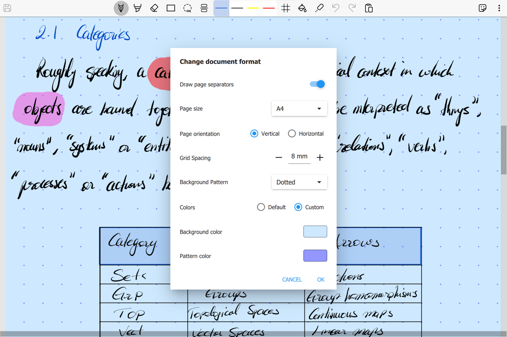
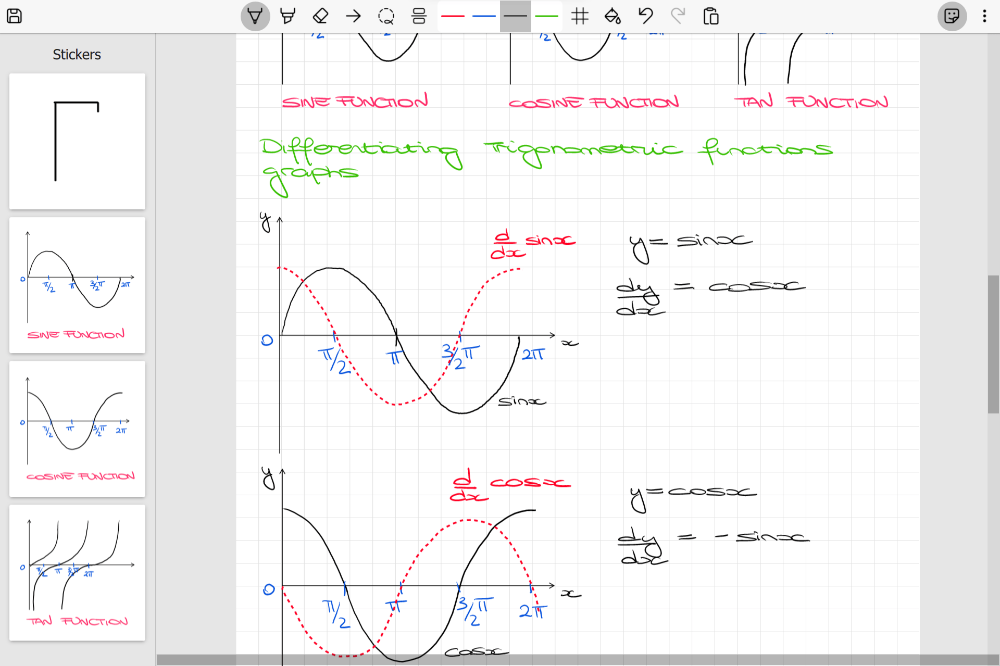

Different backgrounds and page sizes
You can customise your documents by choosing between 4 different paper backgrounds: Plain, Lined, Grid or
Dotted with customisable spacing and backgrounds.
So you can export your notes as PDF documents in traditional printing formats.
Grid Snapping
In Scrivano you can toggle the grid snapping feature so that your drawings will
automatically snap to grid lines in the background. This is very useful to easily draw tables, diagrams and
lines.
Annotate PDF files
You can import your PDF books, lecture slides, articles and documents to annotate them using Scrivano's built-in
inking tools.

Stickers
Save your frequently used symbols and diagrams, so you can easily drag and drop on the canvas whenever you need them.
Laser
Scrivano gives you a special laser tool to quickly draw over your notes. Incredibly
useful when sharing your screen or presenting something!
And much more!